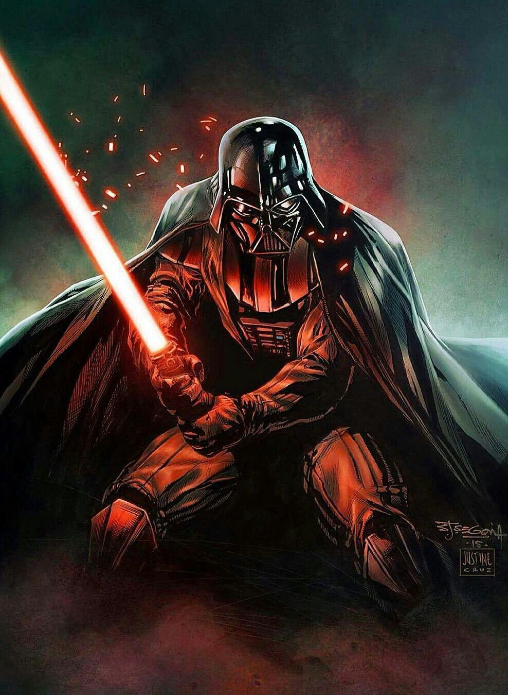
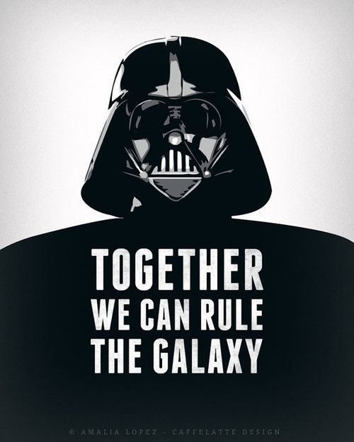
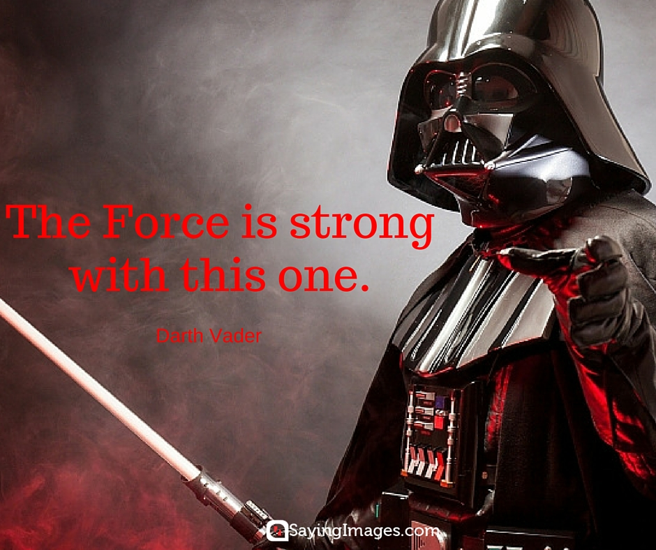
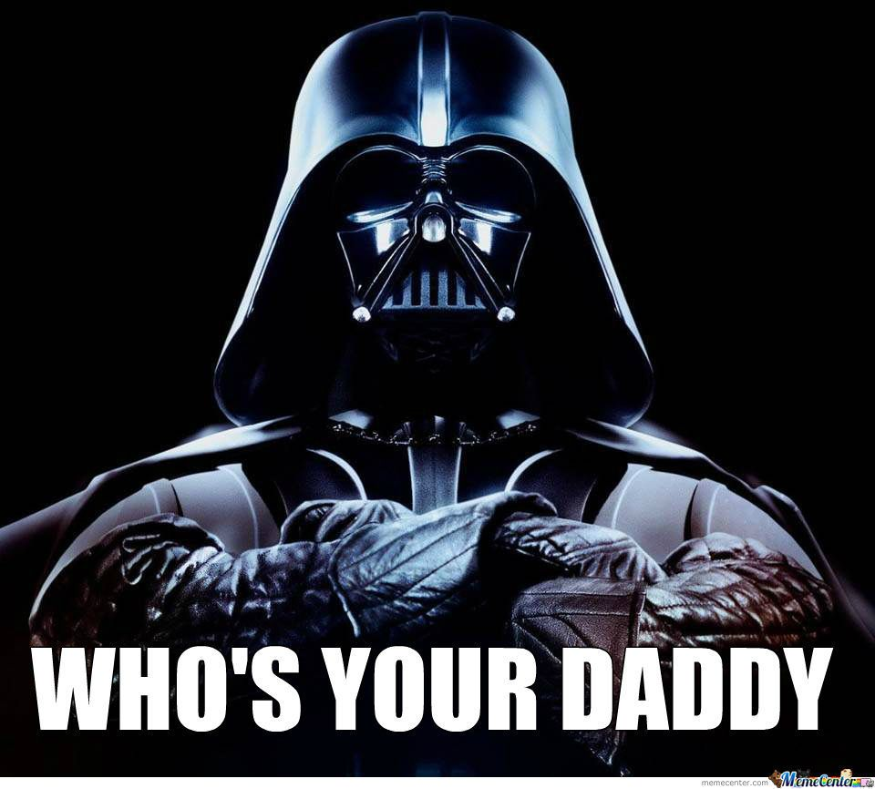

About Lord Vader
Once a heroic Jedi Knight, Darth Vader was seduced by the dark side of the Force, became a Sith Lord, and led the Empire’s eradication of the Jedi Order. He remained in service of the Emperor -- the evil Darth Sidious -- for decades, enforcing his Master’s will and seeking to crush the fledgling Rebel Alliance. But there was still good in him…
Lord Vader's Bio
AFFILIATIONS: Galactic Empire, Sith
LOCATIONS: Death Star, Death Star II
GENDER: Male
DIMENSIONS: Height: 2.03m
SPECIES: Human
VEHICLES: Darth Vader's TIE Fighter
WEAPONS: Darth Vader's lightsaber
Quotes
  